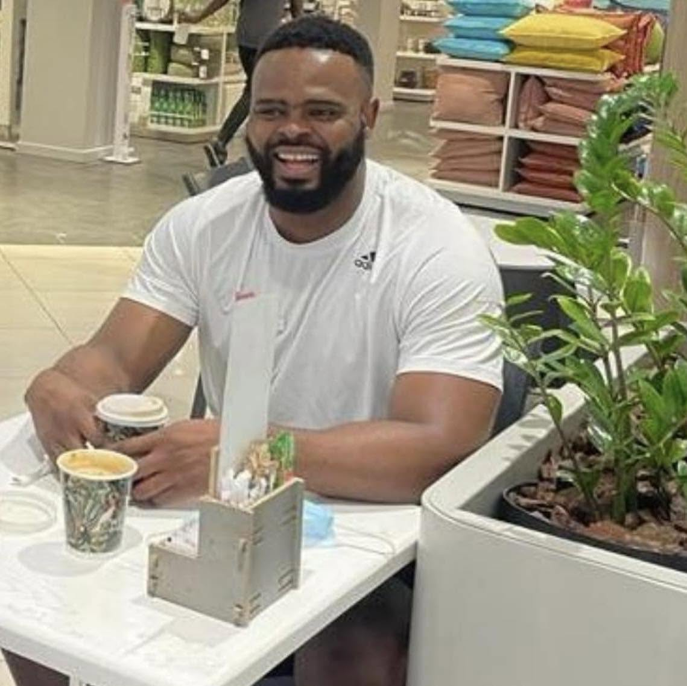

🏪
Local businesses
Help customers discover local shops, products and services.
Eezy Kasi is a township-focused digital platform designed to connect people with local businesses, services, transport and opportunities. We believe local communities deserve accessible digital tools that help them participate in the modern economy.
Explore Eezy Kasi Discover our storyEezy Kasi is an initiative of Inanda Business Enterprise Services (PTY) LTD. It is being developed to make it easier for township residents, entrepreneurs and service providers to find one another and do business.
Our starting point is Inanda, KwaZulu-Natal. Our long-term ambition is to build a platform that can support township communities in other areas as it grows.
Help customers discover local shops, products and services.
Connect people who need transport with participating drivers and vehicles.
Create room for local participation, collaboration and economic activity.
We want technology to work for township communities, not leave them behind.
To connect township residents, businesses and service providers through accessible digital tools that support convenience, visibility and local economic participation.
To contribute to a connected township economy where local businesses can grow, communities can access services and opportunities can be discovered more easily.
To build responsibly, listen to the communities we serve and improve the platform as we learn from real use.
Eezy Kasi is being developed with a long-term commitment to responsible leadership, local participation and building a capable team.

Founder — Inanda Business Enterprise Services (PTY) LTD
Lufefe Melane is the founder behind the Eezy Kasi initiative. The project is driven by the belief that township communities should have access to useful technology that connects local businesses, customers and service providers.
The focus is on building a practical platform rooted in local needs, starting in Inanda and developing its capabilities responsibly over time.
As the initiative develops, we plan to create opportunities for people with the skills and commitment to help build the platform. The positions below are planned roles, not current appointments.
Planned responsibility for media, storytelling, public communication and brand visibility.
Planned role — recruitment to be announcedPlanned responsibility for administration, records, coordination and organisational support.
Planned role — recruitment to be announcedPlanned support for local engagement, operational coordination and community relationships.
Planned role — recruitment to be announcedFuture technical roles supporting platform development, reliability and digital innovation.
Planned role — recruitment to be announcedFuture support for business partnerships, growth and relationships with local entrepreneurs.
Planned role — recruitment to be announcedFuture roles supporting customers, participating businesses and service providers.
Planned role — recruitment to be announcedNo vacancies are being advertised through this page at present. Recruitment announcements will be published when positions are formally opened.
Our initial focus is Inanda, including communities such as Geneva and Bhambayi. Expansion into other parts of eThekwini, KwaZulu-Natal and beyond is a longer-term ambition.
We focus on local areas, businesses and the services people need in their communities.
We aim to make useful digital services easier to discover and use.
We want local participation and sustainable development to remain central as we grow.
Eezy Kasi is designed to bring different participants into one connected digital environment.
Discover participating shops, products and available services.
Present local businesses and manage products and customer orders.
Connect with transport requests and participating customers.
Support the discovery of services and businesses within the community.
Explore opportunities for communities and businesses to coordinate supplier orders.
Develop intelligent assistance for search, guidance and easier platform use.
Eezy Kasi is more than a single service. It is an evolving digital venture exploring how technology can support local commerce, transport, business visibility and community connections.
We are developing the platform in stages, learning from its implementation and improving the experience as services and partnerships mature. We aim to grow on the basis of trust, practical value and responsible operations.
Understand the needs of residents, local businesses and service providers.
Build practical tools and improve them through careful testing and feedback.
Expand services and geographic reach as capacity, partnerships and readiness allow.
Local people and their needs matter.
We value honesty, accountability and transparency.
We use technology to solve practical problems.
We believe local talent and enterprise deserve room to grow.
We aim to make participation more accessible.
We take trust, safety and responsible development seriously.
This section will be used for company announcements, media resources, project milestones and approved photographs as the initiative grows.
For media and communications enquiries, contact our team using the details below.
info@inandabusiness.co.zaAs Eezy Kasi develops, we aim to share stories about participating businesses, community experiences, partnerships and milestones. Stories will be published as they become available.
For general enquiries, business engagement and information about Eezy Kasi, contact Inanda Business Enterprise Services.
Inanda Business Enterprise Services (PTY) LTD
Registration number: 2026/817908/07
5 Ngududu Sukude Street,
Geneva, Bhambayi,
Inanda, KwaZulu-Natal, 4310
South Africa
Email: info@inandabusiness.co.za
Telephone: 081 710 6684
Website: inandabusiness.co.za
We recognise the importance of protecting personal information and handling user data responsibly. Our platform development considers security, access controls and applicable South African privacy requirements, including the Protection of Personal Information Act (POPIA).
Users should consult the applicable privacy information and platform terms when using Eezy Kasi services.
Where services require regulatory permissions or approvals, these must be obtained before the relevant regulated service is represented as authorised. Any transport-related regulatory application or approval must be confirmed separately.